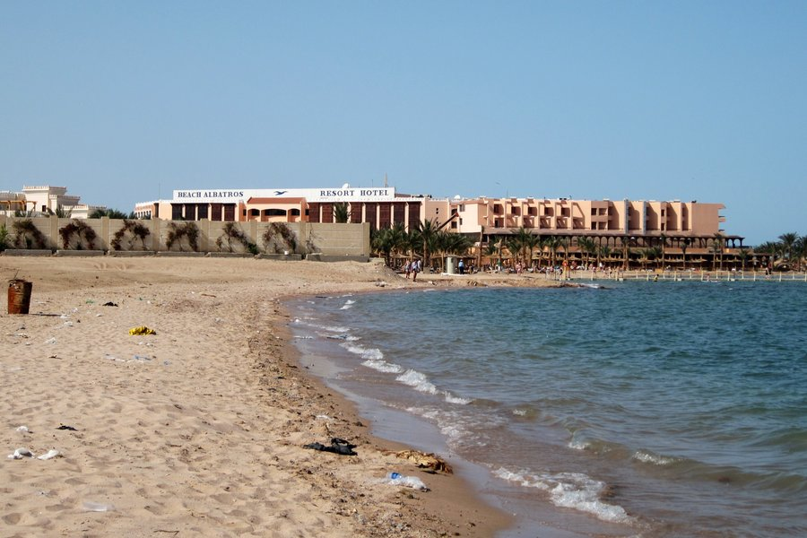

Туры в Египет из Уфы
Египет — одно из самых любимых круглогодичных направлений уфимских путешественников. Главное сокровище страны — Красное море с чистейшей прозрачной водой, богатейшим подводным миром и комфортной температурой для купания даже в зимние месяцы. Турагентство «Жираф» в Уфе подбирает пакетные туры в Хургаду и Шарм-эль-Шейх: мы учитываем особенности захода в море, наличие защищённых от ветра бухт и уровень сервиса в отелях.

Сколько лететь из Уфы в Египет? Прямой чартерный рейс из международного аэропорта Уфа в Хургаду или Шарм-эль-Шейх занимает около 5.5–6 часов. Пакетный тур включает перелёт, групповой трансфер на комфортабельном автобусе, проживание в отеле, питание All Inclusive и медицинскую страховку.
Для кого подойдёт
Семьям с маленькими детьми отлично подходят отели Хургады с пологим песчаным заходом в море и крупными аквапарками. Любителям снорклинга, дайвинга и морской фауны рекомендуем Шарм-эль-Шейх с его живыми коралловыми рифами прямо у отельных понтонов. Парам понравятся уединённые резорты в бухтах Рас-Умм-Сид и Сахл-Хашиш.
Что уточняем при подборе
При подборе тура в Египет мы обязательно уточняем сезонность ветров, наличие подогреваемых бассейнов в зимний период, характер захода в воду (песок, коралловая плита или понтон), качество питания и работу детской анимации.
Сезон и климат
Красное море пригодно для купания 12 месяцев в году. Весна (апрель–май) и осень (сентябрь–ноябрь) считаются золотым сезоном: температура воздуха составляет +28...+32°C, а вода прогрета до +26...+28°C. Летом климат сухой и жаркий (+35...+38°C), переносится легче благодаря постоянному морскому бризу. Зимой (декабрь–февраль) дневная температура держится на комфортных +23...+26°C, а море не остывает ниже +22...+24°C. Для зимних туров мы подбираем отели в безветренных бухтах Шарм-эль-Шейха (Наама-Бей, Шарм-эль-Майя, Рас-Умм-Сид) с подогреваемыми бассейнами.
Хургада или Шарм-эль-Шейх: ключевые отличия курортов
Правильный выбор курорта определяет впечатления от отдыха на Красном море.
Хургада (а также пригородные курорты Макади-Бей, Сахл-Хашиш, Сома-Бей и Эль-Гуна) расположена на материковом побережье. Главное преимущество региона — естественные песчаные пляжи с мягким пологим входом в море, где дети могут безопасно плескаться на мелководье без специальной коралловой обуви. Отсюда удобно отправляться на экскурсии к древним храмам Луксора и долине Нила.
Шарм-эль-Шейх расположен на южной оконечности Синайского полуострова. Курорт знаменит своими коралловыми садами национального парка Рас-Мохаммед. Вход в воду в большинстве отелей осуществляется с деревянных или пластиковых понтонов сразу на глубину к рифу. Зимой Шарм выгодно отличается наличием глубоких закрытых бухт (Шарм-эль-Майя, Наама-Бей), защищённых горами от северного ветра.
Визовые правила и требования к документам
Визовый режим Египта прост и оформляется непосредственно по прибытии в аэропорт.
При прилёте в аэропорт Хургады граждане РФ оформляют туристическую визу в виде марки за 25 долларов США, которая даёт право пребывания до 30 дней.
При прилёте в аэропорт Шарм-эль-Шейха туристы, планирующие находиться только на Синайском полуострове до 15 дней и не выезжающие в Каир или Луксор, могут бесплатно получить «Синайский штамп» (Sinai Only).
Срок действия загранпаспорта должен составлять не менее 6 месяцев с момента окончания поездки.
Концепция All Inclusive в Египте
Большинство отелей Египта ориентированы на комплексный отдых по системе «всё включено».
В стоимость проживания входят основные приёмы пищи в формате шведского стола, дневные закуски в барах у бассейна и на пляже, безалкогольные и местные алкогольные напитки, пользование пляжным инвентарём (лежаки, зонты, полотенца), дневная и вечерняя анимация.
Курорты направления
- Туры в Хургаду из УфыПесчаные пляжи с пологим заходом, спокойное море и идеальные условия для детей.
- Туры в Шарм-эль-Шейх из УфыБогатейшие коралловые рифы, безветренные бухты для зимнего отдыха и дайвинг.
Турция или Египет: подробное сравнение Документы для заграницы: чек-лист перед вылетом
Вопросы по направлению
Сколько по времени длится перелёт из Уфы в Египет?
Прямой чартерный перелёт из международного аэропорта Уфа в Хургаду или Шарм-эль-Шейх занимает около 5.5–6 часов. Питание и нормы багажа определяются правилами авиакомпании-перевозчика.
Нужна ли виза в Египет для туристов из Уфы и сколько она стоит?
В Хургаде оформляется виза по прилёте стоимостью 25 долларов США на 30 дней. В Шарм-эль-Шейхе для отдыха до 15 дней в пределах Синая можно бесплатно получить штамп Sinai Only. Загранпаспорт должен быть действителен от 6 месяцев.
Что лучше выбрать: Хургаду или Шарм-эль-Шейх?
Хургада идеальна для семей с детьми благодаря пологим песчаным пляжам без кораллов. Шарм-эль-Шейх выбирают ради богатого подводного мира, коралловых рифов и тёплых безветренных бухт в зимний период.
Можно ли комфортно купаться в Египте зимой?
Да, Красное море зимой сохраняет температуру около +22...+24°C, а воздух прогревается до +23...+26°C. Для зимнего отдыха мы рекомендуем отели в защищённых от ветра бухтах Шарм-эль-Шейха (Наама-Бей, Шарм-эль-Майя) с подогреваемыми бассейнами.
Нужна ли специальная обувь (коралловые тапочки) для купания?
В Шарм-эль-Шейхе и на некоторых пляжах Хургады с каменистым дном специальная обувь (аквашузы) рекомендуется для защиты ног от кораллов и морских ежей. На чисто песчаных пляжах Хургады тапочки не требуются.
Что входит в систему «всё включено» в отелях Египта?
В пакет входят трёхразовое питание (шведский стол), дневные закуски, безалкогольные напитки, чай, кофе, местный алкоголь в барах, пользование пляжем и бассейнами, шезлонги, зонтики и анимационные программы.
Какие экскурсии доступны во время отдыха в Египте?
Из Хургады популярны экскурсии в Луксор (Карнакский храм, Долина Царей) и Каир (Пирамиды Гизы, Египетский музей). Из Шарм-эль-Шейха отправляются на гору Моисея, в монастырь Святой Екатерины, Цветной каньон и морские прогулки в заповедник Рас-Мохаммед.
Готовы обсудить поездку?
Оставьте заявку в квизе — менеджер предложит 2–4 проверенных варианта с вылетом из Уфы.